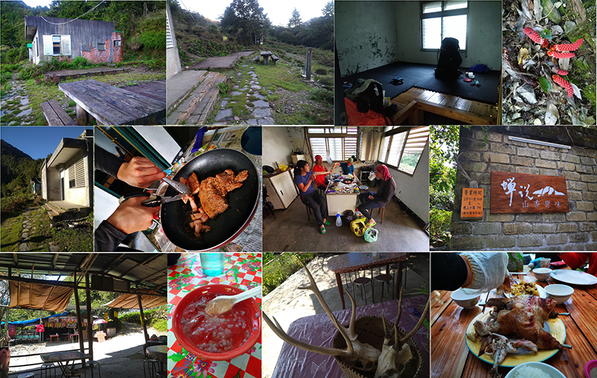

前言
傳統縱走南二段從台東向陽國家森林遊樂園區進入，此次行程戒茂斯登山口上去，坡度及爬升陡，基本上難度增加不少，然而此行的目的主要是親近南二段沿途超過3000公尺以上的山岳，而之前走過的百岳沒順路就會by pass，畢竟行程還有壓縮 (傳統南二段行程安排七天)，外加有些山頭要探勘，需要預留體力及時間去預防突發狀況。
傳統南二段隊友都行走過，包括自己在2015年11月也親近過，當時年少輕狂5天走了11座百岳(其中包括不在行程中的馬博拉斯山)，更早的新手行程三天二夜來回行程，以及老手的新康橫斷，都會經過 “天使的眼淚-嘉明湖”此行程也不例外，距離最近一次縱走時間已經是5個月前，COVID-19影響讓很多爬山活動都按下暫停鍵，今天的第一步就是重新啟動的按鈕…
Day 1，戒茂斯登山口>> 世新谷
隊友從台中，新竹一路往台北集合，縱走行程有安排接駁，從新竹接上來台北至少下班後還有些時間，當接駁大哥把我登山包拎起到車上時說了一句話，你的包有比較重，當下我的心有點忐忑不安…一路跟司機大哥聊天，中途過 蘇花改(臺9線蘇花公路山區路段改善計劃) 後去休息站後，再開不久接上台20線也就是南橫公路直接156.5K處，於半夜二點四十八開始啟登，選定此時此處為了避開一些不必要的麻煩。
而一開始就要拉繩，讓我有點傻眼，看起來要很認真的走，果不其然，速度跟不上隊友，開始把21.5公斤的重量分出2~3公斤出來，自己太天真了，還以為每次縱走自己都能扛上20左右公斤完成，沒想到第一天就爆了，減輕重量後於三點初來到戒茂斯前峰前，而後開始下切到新武呂溪，過溪然後到營地，痛苦的上坡接著又來，要上到排球/足球營地，而此時來到7點半左右，而下個美麗的地方嘉明-湖妹池在海拔3132公尺，也是一直上，而最後還得上到3310公尺嘉明湖，而“天使的眼淚” 搞的我自己的眼淚都快掉下來了….於不到中午12點就在直升機停機坪休息，滑手機報平安。
接著南二新康叉路往新康方向去找飛機殘骸，主要可以順走“大分富士山3056公尺”如願看到分很散的空難事故的歷史機身殘骸，並於下午5點抵達世新谷營地，而第一天我被操翻了，只能請隊友幫忙取水，更感謝每位隊友的重量分擔…
| 登山口在台20線156.5公里，上去時會有一個撿垃圾下山站 | ||
| 足球場營地 | ||
| 嘉明-妹池 3132公尺 | ||
| 嘉明湖3132公尺 | ||
| 1945年9月10日 三叉山事件 飛機殘骸 (第二次世界大戰日本宣布投降後，一架載滿已釋放的美軍俘虜，在三叉山東北方撞毀，機上26人全部罹難，後來由日軍警組成之搜救隊，分為前中後三隊，而巧合的事，前隊26人在途中遇難，前隊生還者僅憲兵曹長後山定1人，史稱 “三叉山事件”) | ||
| 大分富士山3056公尺 | ||
Day 2，世新谷>> 轆轆谷山屋
經過第一天的震撼教育，昨天就把5根香腸，一片鯖魚吃了減重，今天決定保全自己的體力，放棄需要額外岔出去撿的山頭或行程，昨晚谷地起大霧，帳棚很濕，5點半隊友出發前往尋找大鵬航空墜落事件殘骸，因為實在太不好意思昨天的分擔重量，因此自己留在谷地好好打包裝備，預計今天就是自己慢慢走轉移到山屋，很快隊友也回到谷地，拍了好多比昨天完整的飛機殘骸，大伙六點半一起出發而今天我只需要扛20.7公斤走到下個點就可以好好回充體力，大約走2個半小時到“南雙頭山東峰3352公尺”然後再切回南二段傳統路徑順撿“南雙頭山3356公尺”。
接下來的11點多到雲峰叉路，後面接下來的雲峰中峰/ 東峰/ 東北峰以及轆轆山南峰全放掉，大約下午三點自己先到轆轆谷山屋，把濕透的帳攤開來曬乾，然後開始煮麵+辣子雞丁調理包，爽爽的等著隊友回來，中途有先拔些松針來煮水，等隊友回來可以喝。
後續隊友的輕裝記錄花了40分到雲峰中峰，25分到雲峰東峰，回雲峰岔路已經下午2點多，然後雲峰東北峰岔路14:45回來已經16:15 (1小時30分)，外加20分來回轆轆山南峰 還好有自知之明，輕裝雖然可以跟的上，但重裝會被海放，最終隊友下午六點走到轆轆谷山屋，天色未暗…
| 行程安排之走法從(1)嘉明湖>>南二新康岔路>>往三叉山事件飛機殘骸>> (2)大分富士山>>世新谷 >>大鵬航空飛機殘骸>> (3)南雙頭山東峰>>最後回到南二傳統路徑 |
||
| 大鵬航空飛機殘骸空照圖 | ||
| 隊友分享大鵬航空飛機殘骸 | ||
 |
||
| 世新谷全貌 | ||
| 南雙頭山東峰3352公尺，南雙頭山3352公尺 | ||
| 轆轆谷山屋 | ||
| D1&D2消耗的食物 五根飛魚卵香腸，隊友的四根德國香腸 (各切半變八根) 一片鯖魚， 一包好勁道麵，辣子雞丁調理包，二顆雞蛋，青菜 |
||
Day3，轆轆谷山屋>>達芬尖山岔廢棄山屋遺址
前天晚上喝茶討論，今天的住宿點需要在中途山屋揹水，因此還是努力扛19.7公斤過去，6點10分出發，走了四十五分後到轆轆山岔路還好轆轆山東峰3267公尺，在路邊不遠，大約8點半到岔路，輕裝走20分到塔芬山南峰3027公尺，然而上坡速度還是跟不上隊友，大約差20~30分的腳程，10點50分來到達芬山3070公尺，今天每座山頭都有合照到，而且到塔芬谷山屋，隊友還幫我揹1公升的水，而自己先喝飽喝滿裝在肚子裡，再把行動水都補滿500cc+750cc 外加1公升的濾水袋的水，這樣揹負重量又恢復到出發前。
大約12點半再出發前往今天營地，原本有隊友提議要衝到大水窟山屋，但這樣會搞到連三天都很累，因此最終決定於傳統路徑上的 達芬尖山叉路廢棄山屋遺址 扎營過夜，快二點半時抵達，同伴都已搭好帳等我要去達芬尖山北峰，後來搭好帳後天氣突然轉陰，又有打雷，最終決定明天早上再去。
接著就是泡茶，煮晚餐時間，剛好此營地有廢棄的木條跟木頭可以撿，晚上升營火暖身，順便聊聊明天怎最有效率的走回八通關古道…
| 塔芬山南峰 之後到 塔芬池 休息 |
| 轆轆山東峰3267公尺/塔芬山南峰3027公尺/達芬山3070公尺/ 塔芬谷山屋 |
| 廢棄山屋遺址搭帳 |
Day4，達芬尖山岔廢棄山屋遺址>> 觀高
一早起來先走輕裝前往達芬尖山北峰3045公尺走約40分就抵達，返回營地後也才6點半不到，陽光一直無法曬到帳，因此大伙紛紛把帳往高處，而今天的路徑要切西瓜，下切到荖濃溪底後再爬上八通關古道，此條路線是以前傳統路線，但比較少人會這樣走，隊員需要走一起，因此隊友幫我分攤了3~4公斤，自己包重來到16.3公斤，經過達芬尖山2.9/大水窟山屋3.6木樁來到往北面山岔路，約8點50到北面山3167公尺沿稜線下切至溪底約1小時抵達溪底並安全通過。
休息15分後，陡上松針林地最後接上八通關古道-大水窟山西南側岔 (杜鵑營地2.1/南營地1.5)，沿途被大火燒成炭的樹木還蠻大一片，來到杜鵑營地碰到一對男女，大家把帳又攤開來晾乾，大休50分鐘後，繼續往八通關草原前進，原本要在草原扎營安寨，但看到有大隊伍進駐，加上飄小雨，所以臨時決定再往前推到觀高，終於下午4點10幾分到，馬上衝下去搶第一間工寮，剛好二間房住五人…
觀高工寮第一次住，建築物有被噴藍漆公告：“本棟建物東西向山坡，因自然現象陸續侵蝕滑動(落)，經委託地質監測及設施環境安全整體評估，建物已有安全性之疑慮，為人員生命安全考量，請山友另覓附近安全腹地使用，特此公告”…之前有山友搭帳在觀高直昇機降落處被罵翻，很有可能看到此噴漆而不敢入住，但說實在的觀高的直昇機降落處真的不明顯而且沒有像八通關草原或嘉明湖岔路有個白色H，因此需注意。
| 達芬尖山北峰3045公尺/ 北面山3167公尺 | ||
| 北面山下切荖濃溪後陡上至八通關古道-大水窟山西南側岔 | ||
| 荖濃溪底 | ||
| 被燒燬一大片的樹木，多已炭化 | ||
| 八通關危險地型 | ||
Day5，觀高工作站>> 東埔
還不錯的住宿點，第一間工作站房間有二間，而且都有床墊，還有桌子可以煮飯泡茶，昨天就把鴨肉及鹹豬肉及二顆蛋，麵，料理包全部煮食完，並把零食都供獻出來配茶。
早上過七點才出發返回文明，今天可以量自己打包的基礎重量，還有16.4公斤，隊友都已經降到13以下，閔哥更破9公斤，因此大伙都走很快，走到最後快跑起來了，大約9點半就到樂樂山屋，接著就要戴上口罩，會碰到遊客，今天人算少了，快速經過雲龍瀑布，於不到11點就抵達愛玉亭，狂吃二碗愛玉，下山吃 “蟬說雅築”的烤雞…真香~~
|  |
行程後經驗分享：
A. 檢討哪些裝備及物品可輕量化：
此次行程第一天就感覺自己爆了，不外乎跟隊友揹負重量差異太大，自己根本沒有輕量化考量，帶了有的沒的東西，因此行程後決定好好的檢視自己的裝備，100升登山包空包重就3.4公斤(換輕量化包有機會省一半重量1.7公斤)，平底鍋440g(換成爬山用可省270g)，沒用到的GoPro 及配件 (不帶省530g)，二顆充電寶440g+備用手機90g(帶1顆省220g及不帶備用手機省90g)，然而重點的食物，我完全帶生鮮食物用保冷袋裝至少3公斤，外加調理包*2(220g*2)，好勁道*2(300g*2)，所以食物最少4公斤(簡化帶泡的為主的食物至少減2公斤)，蜘蛛爐+擋風板約440g (換掉用MSR爐，至少省240g)，剪刀+夾子+餐具組約260g(至少需省一半減130g)，總結一下：1700g+270g+530g+220g+90g+2000g+240g+130g = 5180g
從上綜合我出發第一天揹21.5公斤-約5.2公斤=16.3公斤，看起來裝備輕量化勢在必行，尤其碰到壓縮行程，能揹又能走加上輕量化的隊友，真的會跟不上速度。(後續要再輕就要對帳篷下手)
B. 行程中被操爆後如何修正：
此次行程第一天從戒茂斯登山口上，過嘉明湖然後來到南二/新康線岔路，後面接走探勘路線到 “世新谷”，負重超過20公斤以及距離也快20公里，如果以單攻的耗力指數來算19.8+22.03=41.83，超過奇萊主北單攻的耗力指數，等於是重裝在走單攻行程，難怪會被爆掉。
第一天晚上就在思考，回到南二主路線時要保留體力，不要再岔出去撿其它山頭，因此第二天就照自己的步調放掉輕裝行程及雲峰相關山頭，集中體力重裝到下個住宿點，隊友雖然刻意等我，但知道自己會拖累他們，因此放棄了一些登頂行程，於下午3點早早到轆轆谷山屋休息，後面行程才能恢復跟上整隊的步調，一來自己體力恢復，二來食物消耗負重變輕，但最主要還是隊友太強大，幫忙分擔一些重量，讓上坡變輕鬆許多。
C.學習到隊友怎判斷/規劃探勘路線：
此行目的主要走268岳，如果要走在傳統路線上然後再切過去，會變不順路或碰到該扎營在哪的問題，因此事先的功課很重要，尤其水源，重點是如何避開某些路段，因此每天晚上大伙會泡茶討論行程，此行程最經典的是走 “北面山”後直接下切荖濃溪後再爬上八通關古道，省去爬升大水窟山3642公尺/ 北大水窟山3628公尺，也省掉白洋金礦山屋到中央金礦山屋超大一圈，而在八通關古道有點距離的 “巴奈伊克山3321公尺”及 “躑躅山 3000公尺”之後有機會一日單攻前往或安排二天一夜住巴奈伊營地包二座行程。
個人行程記錄：
D1 總時間：14小時12分，距離19.8K爬升2203m 下切1283m，負重21.5公斤
02：48 戒茂斯登山口
03：09 戒茂斯山前峰 2065公尺
05：14 新武呂溪營地
07：18 排球場營地
07：34 足球場營地
10：00 嘉明-妹池 3132公尺
10：54 獵寮營地
11：46 嘉明湖 3310公尺
12：38 新康/南二叉路口
16：06 大分富士山 3056公尺
17：00 世新營地 （宿）
D2 總時間：8小時40分，負重20.7公斤
05：40 一早隊友去大鵬飛機殘駭
06：25 出發
09：08 南雙頭東峰 3335公尺
09：51 南雙頭山3356公尺
11：14 雲峰下三叉營地
11：56 與隊友分開放棄雲峰中峰/東峰/東北峰 前往轆轆山屋
14：52 看見遠處山屋
15：05 轆轆山屋 （宿）
17：56 隊友抵達包括完成轆轆山南峰
D3 總時間：8小時16分; 距離:10.9k 爬升1152m 下切1028m，負重19.7公斤
06：10 出發
06：55 轆轆山東峰 3267公尺
08：57 塔芬山南峰 3027公尺
10：06 塔芬池 2950公尺
10：50 塔芬山 3070公尺
11：44 塔芬谷山屋
12：32 山屋休息後出發
14：21 達芬尖山叉路
14：26 廢棄山屋遺址 （宿）
D4總時間：11小時8分; 距離23.2k 爬升1162m 下切1743m，負重16.3公斤
05：04 輕裝出發
05：40 達芬尖山北峰 3045公尺
06：22 返回營地曬帳
07：31 重裝出發
08：24 往北面山叉路 （經過達芬尖山/大水窟山屋 木樁）
08：51 北面山 3167公尺
09：50 沿稜線下切至溪底
09：56 過溪後休息
11：12 上切至杜鵑2.1K/南營地1.5K 木樁叉路
11：45 杜鵑營地
13：41 中央金礦山屋
14：03 巴奈伊克山屋
15：05 八通關古道上切鐵橋
15：17 確認八通關草原人員多不適合扎營後往前推
15：24 過崩塌地
16：12 觀高工作站 （宿）
D5 總時間：3小時29分，距離16.1k 爬升358m 下切1844m，負重16.4公斤
07：08 觀高工作站 出發
08：21 對關日據駐在所
09：34 樂樂山屋
10：01 雲龍瀑布
10：37 愛玉亭